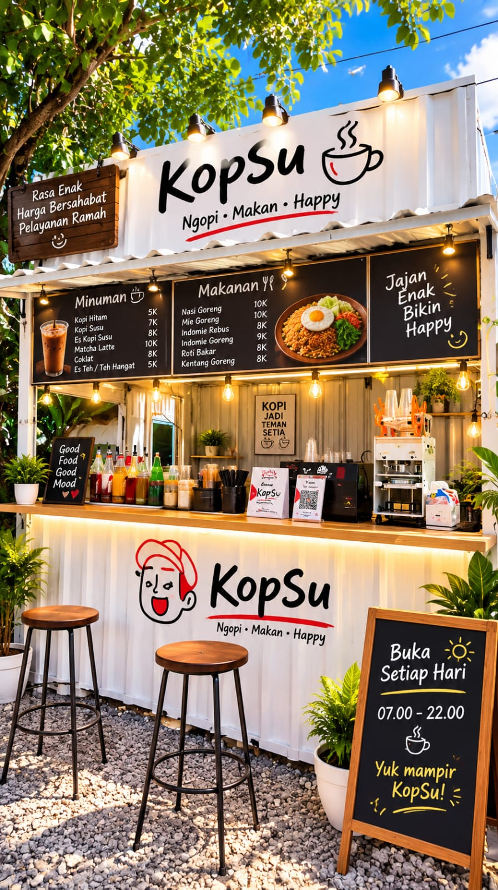

TEMUKAN KAMI
Mampir ke
KOPSUPATI.
Lokasi: Depan Pegadaian Kayen, Pati. Buka setiap hari pukul 07.00–22.00.

LOKASI OUTLET
Depan Pegadaian Kayen, Pati
Cari outlet KOPSUPATI di depan Pegadaian Kayen, Kabupaten Pati, Jawa Tengah.
Jam buka: Setiap hari · 07.00–22.00
Buka Google Maps ↗